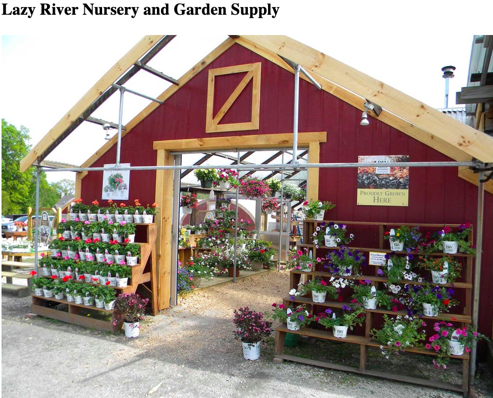
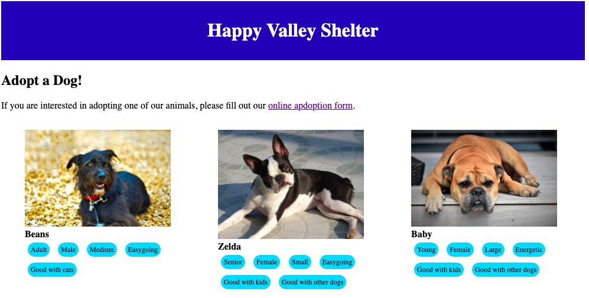

Projects
Garden Supply Store
My first project! I used html making this website. I learned how to oragnize and build the structure of my html code during this project.

Dog Adoption Website
I used html and css to code this wesbite. I enjoy organizing CSS, but not the actual styling decisions. I learned a lot of CSS overall, but specifically flexboxs and linear gradients.
